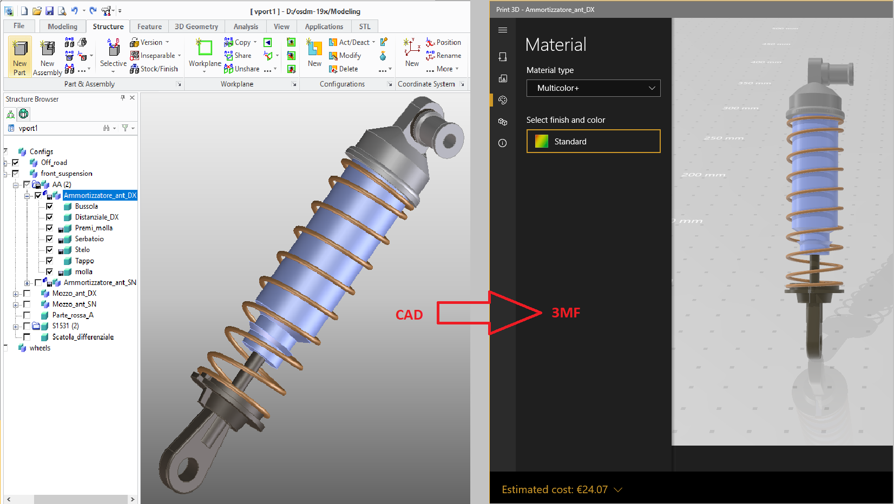
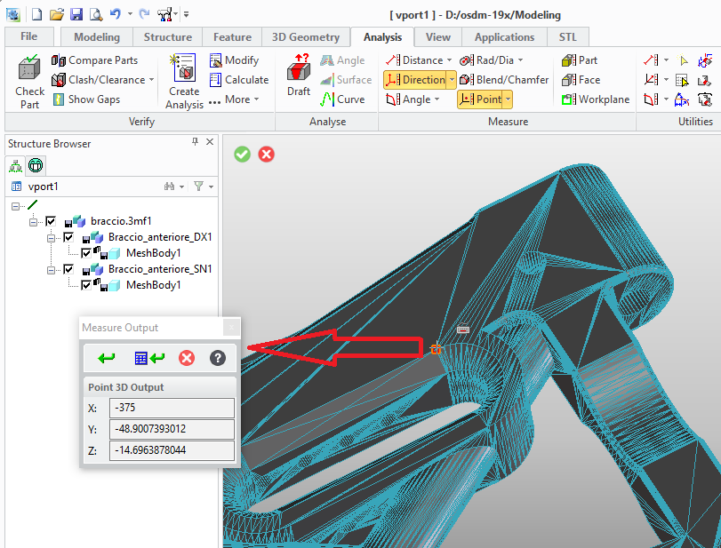
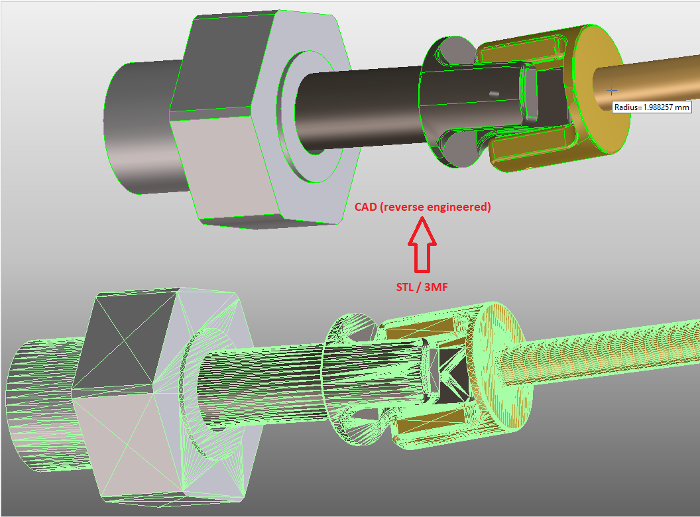

Modeling Extension Module '3d_printing'
3D Printing Extension Data Sheet
The 3d_printing extension module for Modeling provides integration with the
3D printing process chain. It adds utilities and dialogs
to import, export and work with manufacturing data in the industry standard formats
STL and 3MF.
Manufacturing Data Export

3D CAD Models can be exported in popular manufacturing data formats STL and 3MF:
- Manufacturing data can be generated from CAD models with full control of linear and angular precision of the triangular mesh.
- STL data export supports multiple 3D parts per STL data file.
- 3MF data export supports:
- Assembly structures and part positioning
- Geometry sharing (Shared parts)
- Part colors
- Custom metadata
Manufacturing Data Import

STL and 3MF data can be imported to Modeling as:
- Lightweight graphical model supporting geometry inspection
- 3D CAD model supporting modeling operation (depending on the data quality), geometry inspection and surface reconstruction.
- 3MF data import supports:
- Metadata
- Component Structure (represented as assembly structure)
- Shared Components (represented as shared parts)
- Color
Surface reconstruction

- Higher level surface regions are reconstructed from the triangular facet model with automatic or manual precision control.
- Based on supervised machine-learning algorithms.
- Significant data reduction
- Model and surface manipulation (depending on the data quality)
Getting Started
- Extension Module Installation and Startup
- Extension Module Customization Overview
- The Extension Module User Interface
- Known Limitations
- Import Examples
- Package Release Notes
Programming Interfaces
Lisp packages in this module
| Name | Summary |
|---|---|
3d-printing |
Primary package of the 3d_printing extension module for Modeling. |
3d-printing.data-exchange |
The package :3D-PRINTING.DATA-EXCHANGE (nicknamed :3DP.X) contains a LISP API and dialogs to import or export manufacturing data such as STL or 3MF. |